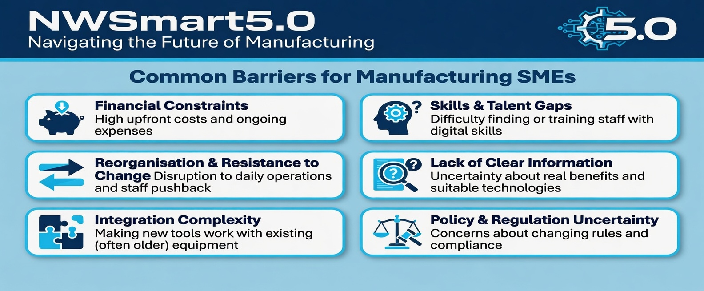

Why Digital Transformation Matters for Manufacturing SMEs
Digital transformation is not just about adopting new technology — it is a strategic journey that delivers significant business benefits when done correctly.
Key Benefits Include:
- Increased productivity, precision, and cost savings
- Predictive maintenance and reduced downtime
- Addressing labour shortages by automating repetitive tasks
- Improved safety and ability to attract younger talent
- Faster innovation and time-to-market
- Sustainability gains (reduced waste and progress toward net zero)
Important Note: These benefits are only fully realised when combined with strong cybersecurity and responsible practices. Poorly secured systems can create new risks.
Digital Transformation for Manufacturing SMEs: A Practical Roadmap to Industry 5.0
This page provides practical guidance, tools, and resources to help North West manufacturing SMEs successfully navigate digital transformation in line with Industry 5.0 principles — placing human-centricity, sustainability, and resilience at the heart of technological change.
Digital transformation is not just about technology. It is a journey that puts people at the heart of change, builds resilience, and drives sustainable growth. This aligns with Industry 5.0 principles and the Greater Manchester Digital Blueprint.
The Made Smarter “Digital Transformation: A Made Smarter Roadmap for SME Manufacturers” whitepaper is an excellent practical starting point. It explains the journey in clear steps tailored specifically for North West manufacturing SMEs.
Planning Digital Transformation Realistically
Successful digital transformation usually happens in stages rather than through a single large-scale technology project.
Identify Operational Challenges
Start by understanding business priorities, workforce needs and operational pain points before selecting technologies.
Start Small
Early improvements may focus on reducing manual processes, improving visibility and strengthening communication between systems.
Build Confidence
Smaller projects can reduce risk, demonstrate measurable value and improve workforce confidence.
Scale Gradually
Use lessons learned from early projects to improve readiness for future transformation activities.
Building Digital Skills and Culture
Successful transformation depends on workforce engagement, leadership support and skills development.
Digital Confidence
Support employees using new systems and digital tools in day-to-day workflows.
Data Literacy
Help teams understand and use production and operational data effectively.
Cybersecurity Awareness
Build awareness around phishing, password security and safe use of connected systems.
Safe AI Understanding
Help staff understand both opportunities and risks linked to AI-supported technologies.
Inclusive training approaches can help organisations support diverse workforce needs and improve participation across different roles and experience levels.
Measuring Transformation Success
Digital transformation projects should be reviewed regularly to understand whether they are delivering measurable operational value.
📈 Productivity
Improved efficiency and operational output⚙️ Downtime
Reduced unplanned maintenance disruption♻️ Sustainability
Reduced waste and improved energy efficiency🔐 Cybersecurity
Improved resilience and operational securityBenefits Realisation Tracker
Track operational improvements, investment value and transformation progress over time.
Responsible and Secure Digital Transformation
Connected systems, cloud platforms and AI-supported technologies create both opportunities and responsibilities.
Cybersecurity Risks
Connected systems can introduce operational vulnerabilities and supplier access risks.
Click to learn more →Building Resilience
Manufacturing SMEs should secure connected systems, review remote access arrangements and strengthen operational cyber resilience.
Responsible Technology Use
Digital transformation should remain human-centred, transparent and sustainable.
Click to learn more →Human-Centred Innovation
Transformation should support workforce wellbeing, inclusion, sustainability and explainable AI practices.
Core Concepts – The Three Ds
Think of digital transformation as a journey with three key stages. Start with strong foundations before adopting new technology.
1. Digitisation (Stage 1)
Convert paper-based and analogue records into digital formats. This creates reliable data and captures workforce knowledge.
Tip: Ensure new digital records follow GDPR and basic cyber hygiene (see Cybersecurity section).
2. Digitalisation (Stage 2)
Use technology to improve specific processes — for example, automation, IIoT sensors, robotics, or data analytics. Focus on solving one problem at a time.
Tip: Consider safe AI and human-in-the-loop approaches to keep workers empowered.
3. Digital Transformation (Stage 3)
Connect digital tools across the whole business — operations, supply chain, customers, and culture. This is continuous and strategic.
Industry 5.0 Perspective: Prioritise human-centric design, sustainability (net zero), and resilience against cyber threats.
Your Step-by-Step Action Plan
Follow this practical 5-step roadmap to begin or advance your digital transformation journey:
1. Assess Readiness
Use Made Smarter diagnostics and digital maturity tools. Fully funded support options are available in the North West.
2. Build Skills & Culture
Explore leadership programmes and develop Digital Champions within your team.
3. Pilot & Implement
Start with small, targeted projects. Take advantage of technology grants (up to £20k match-funded).
4. Secure & Scale
Integrate strong cybersecurity and responsible AI practices from the beginning.
5. Measure & Improve
Track impact on people, planet, and profit. Continuously refine your approach.
Digital Transformation Tools
Practical, ready-to-use templates from the Made Smarter Roadmap to support your digital journey.
Toolkit – The Three Ds Journey Map
Complete toolkit to help you understand and map your business across Digitisation, Digitalisation, and Digital Transformation stages.
Download Toolkit (.docx)Digital Readiness Self-Assessment
Introduction video + checklist to assess your current digital maturity level and identify priority areas.
Download AssessmentOne-Page Digital Transformation Roadmap Planner
Simple, powerful one-page template to plan your digital initiatives and track progress.
Download Planner (.docx)NWSmart5.0 Roadmap Planner Template
Customisable template designed specifically for North West manufacturing SMEs.
Download Template (.docx)Real North West Examples
Here are some manufacturing SMEs that have made progress on their digital journey:
Storth Machinery (Cumbria)
Used robotics and automation to tackle severe labour shortages and attract younger workers.
ELE Advanced Technologies (Lancashire)
Introduced machine condition monitoring to reduce unplanned downtime.
Crystal Doors
Used digital tools to support net-zero goals and improve efficiency.
ATEC Engineering Solutions
Moved from paper-based systems to digital records.
Regional Digital Priorities: Greater Manchester Digital Blueprint 2023–2026
The Greater Manchester Digital Blueprint sets out how the region aims to use digital technology to build a resilient, inclusive, and prosperous economy. It contains useful guidance for manufacturing SMEs undertaking digital transformation.
Download the Full Blueprint

Adapted from: Greater Manchester Digital Blueprint 2023–2026 (GMCA, 2023).
Practical Readiness Checker – How Aligned Is Your Business?
Score each statement from 1 (Not started) to 5 (Fully in place). This quick self-assessment will help you understand your current digital maturity.
Your Total Score: 0/25
Reflection Questions
- Which priority matters most to our company right now?
- What is one practical step we could take in the next 3 months?
Understanding Barriers to Digital Transformation – DSIT Technology Adoption Review 2025
This official UK Government review examines why many manufacturing SMEs find it difficult to adopt digital technologies. It highlights common barriers and supports the value of programmes like Made Smarter.
Adapted from: DSIT Technology Adoption Review 2025.
Common Barriers for Manufacturing SMEs

Barriers Self-Check – How Big Are Your Challenges?
Score each barrier from 1 (Not an issue) to 5 (Major problem).
Your Total Score: 0/30
Next Step Tip
Identify your biggest barrier(s) and use the tools in the Made Smarter Roadmap section above to begin addressing it.
Advanced Manufacturing Insights: High Value Manufacturing (HVM) Catapult – Digitalisation Resources
The High Value Manufacturing Catapult is the UK’s leading innovation centre for advanced manufacturing. It helps manufacturers — including many SMEs — apply digital technologies in real factory settings to improve productivity, reduce costs and waste, and become more sustainable.
Key Benefits of Digital Manufacturing
- Increased productivity through better use of production data
- Reduced waste and material usage
- More resilient supply chains
- Faster innovation and time-to-market
- Improved sustainability and lower energy consumption
Practical Advice for Successful Transformation
- Start with clear change management and involve staff at all levels
- Avoid trying to do too much too quickly (scope creep)
- Build in cybersecurity from the start
- Focus on solving specific business problems rather than adopting technology for its own sake
Useful Resources from HVM Catapult
- Digitalisation in Manufacturing – Overview of how digital technologies can transform production
- Making your digital manufacturing transformation a success – Excellent practical guidance on overcoming common barriers
- SME Support Hub – How HVM Catapult supports smaller manufacturers with advice, facilities, and projects
Which area (productivity, waste reduction, skills, or supply chain) could benefit most from digital tools in our business?
Content adapted from: High Value Manufacturing Catapult resources (2025–2026).
Further Resources & Next Steps
Here are the best places to continue your digital transformation journey.
Recommended Resources
Made Smarter North West
Fully funded diagnostics, roadmaps, and grants (up to £20k) for manufacturing SMEs.
Visit Made Smarter NWHigh Value Manufacturing (HVM) Catapult
Practical guidance on digital twins, smart factories, and real-world transformation.
Visit HVM CatapultGreater Manchester Business Growth Hub
Local advice and support tailored for North West SMEs.
Visit Growth HubKey Documents
- Made Smarter Digital Transformation Roadmap (2024)
- Greater Manchester Digital Blueprint 2023–2026
- DSIT Technology Adoption Review 2025